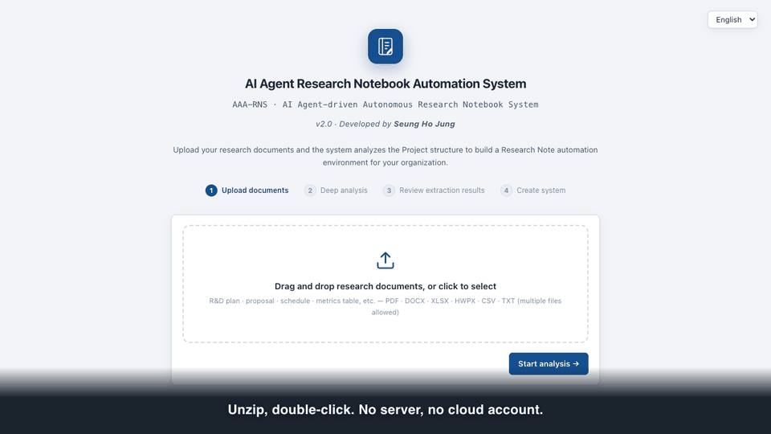

A research notebook that refuses to seal an unsupported claim.
근거 없는 문장은
기록으로 남지 않습니다.
根拠のない文は
記録に残りません。
Upload your project documents and it builds a notebook system shaped around your project. Feed it lab logs and measurement files and it drafts each note from them — every sentence carrying the evidence ID it came from. No server, no cloud account, no Docker, no IT department.
연구개발계획서를 올리면 그 과제에 맞는 연구노트 체계를 스스로 구성합니다. 실험일지와 측정 데이터를 넣으면 노트를 자동으로 집필하고, 모든 문장에 근거가 된 증거번호가 붙습니다. 서버도, 클라우드 계정도, Docker 도, 전산 담당자도 필요 없습니다.
研究開発計画書をアップロードすると、その課題に合わせた研究ノート体系を自動で構成します。実験日誌と測定データを入れるとノートを自動執筆し、すべての文に根拠となった証拠番号が付きます。サーバーもクラウドアカウントも Docker も情報システム担当者も要りません。
Unzip, double-click. Python 3 is the only prerequisite — macOS and most Linux systems already have it. First run only: macOS asks you to right-click → Open; Windows asks via SmartScreen (More info → Run anyway).
압축을 풀고 더블클릭하면 끝입니다. 선행 조건은 Python 3 하나이며, macOS 와 대부분의 Linux 에는 이미 들어 있습니다. 처음 한 번만: macOS 는 우클릭 → 열기, Windows 는 SmartScreen 에서 추가 정보 → 실행.
展開してダブルクリックするだけです。前提は Python 3 だけで、macOS と多くの Linux には既に入っています。初回のみ: macOS は右クリック → 開く、Windows は SmartScreen で「詳細情報 → 実行」。


